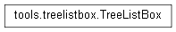

User Documentation
Developer Documentation
Support
Custom class that acts similar to a listbox, but supports a columned view and the ability to sort by columns of data.

TreeListBox
Class that internally handles a TreeView widget which creates a columned view of the information from the database
update
Redisplay any information updated in self.list to the screen
sort_by
Sorts the treeview by the column clicked by the user